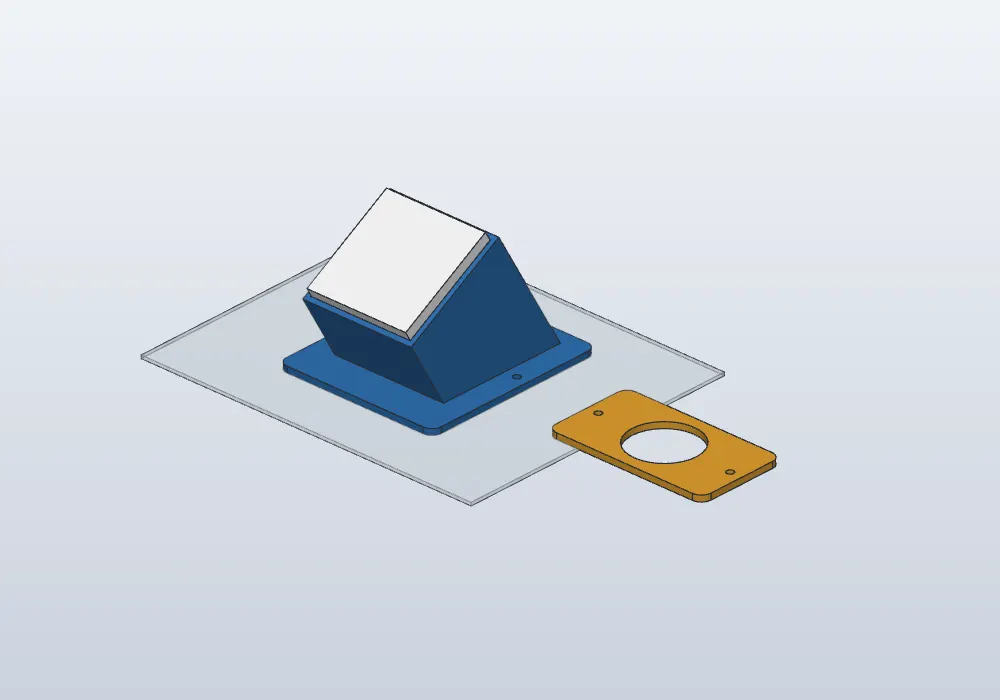
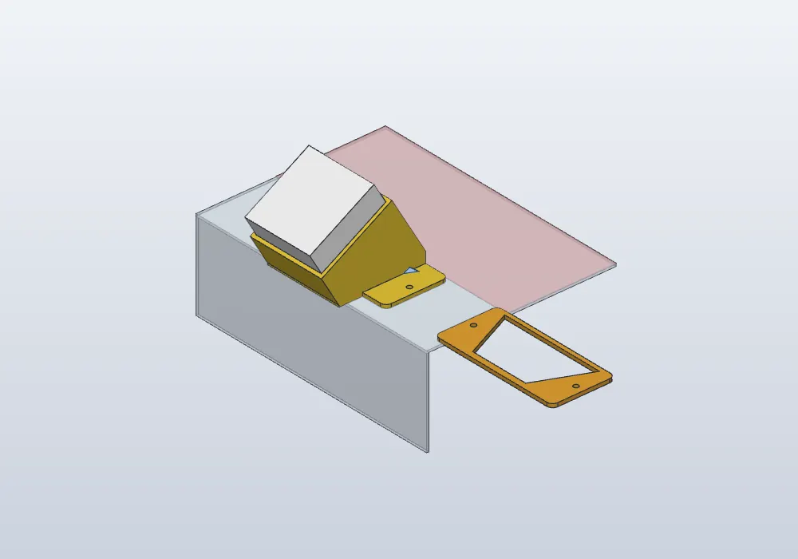

Problem
Die kleine Kamera auf der Druckerhaube schaute durch die Kunststoffwand. Das Bild war trüb und am Rand abgeschnitten.
Lösung
- Hülse hält die Kamera um 30° geneigt über dem Druckbett
- Ausschnitt in der Haube mit Sichtkegel, damit nichts das Bild abschneidet
- Kleiner Fuß, der vor den Rippen der Haube Platz findet, mit zwei M3-Schrauben und Gegenplatte
KonstruktionDruckVideoMakerWorld
Stand
Version 3 nach zwei Testdrucken: Die erste schnitt das Bild rund ab, die zweite war zu groß für die Haube.
Noch offen: montieren, Zeitraffer vorher und nachher vergleichen, Short.
Version 1 und Version 3
Version 1 schnitt das Bild rund ab. Version 3 hat einen Sichtkegel und einen kleineren Fuß.


In 3D drehen
Ziehen zum Drehen, zwei Finger oder Mausrad zum Zoomen.
echtes Modell aus der Konstruktion · lädt erst beim Antippen
Druckbahnen Schicht für Schicht
Slice-Ansicht Version 3 + Schablone
Alle Druckbahnen aus der echten Druckdatei, farbig nach Art. Mit dem Schichtregler sieht man, wie das Teil Schicht für Schicht entsteht. Baumstützen nur im Sichtkegel, 337 Schichten, 47 g laut Druckdatei.
ca. 2 MB